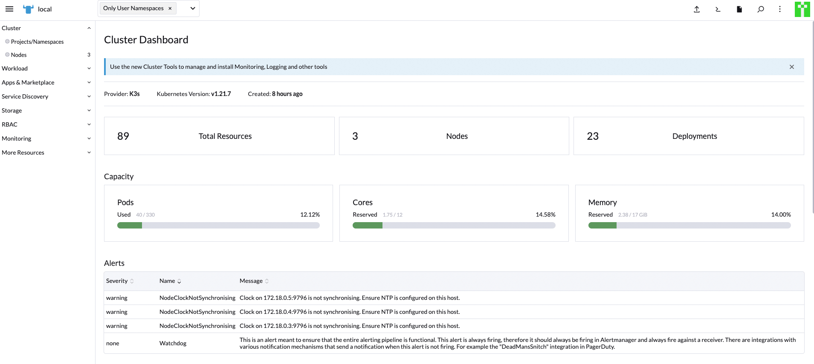
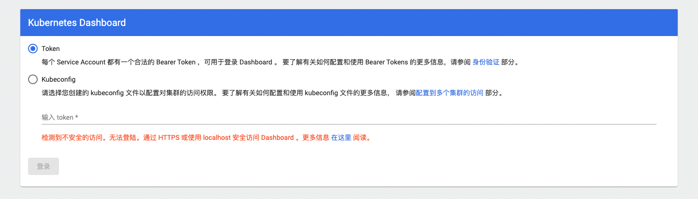
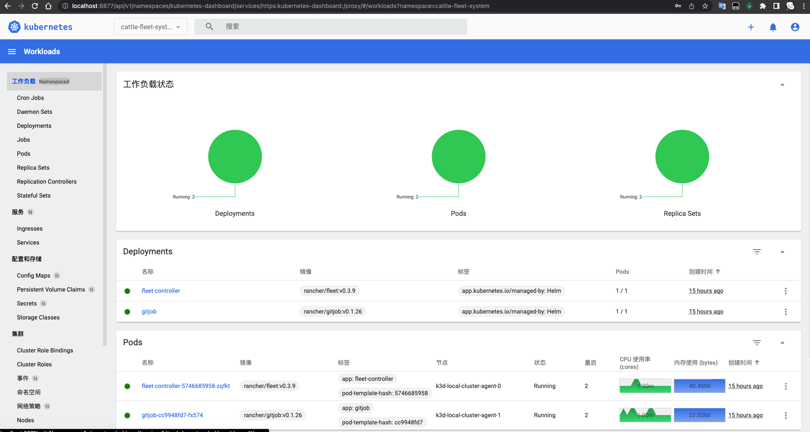
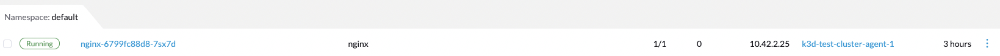
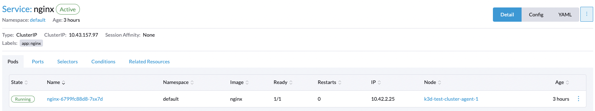
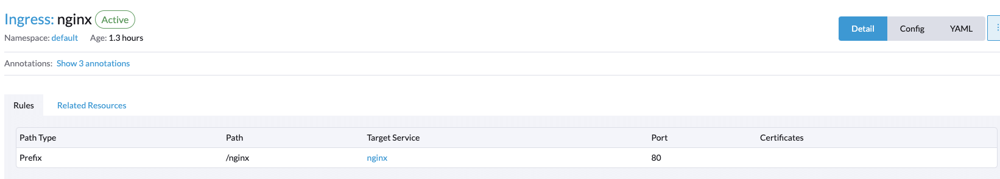
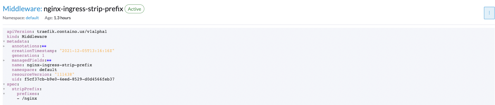
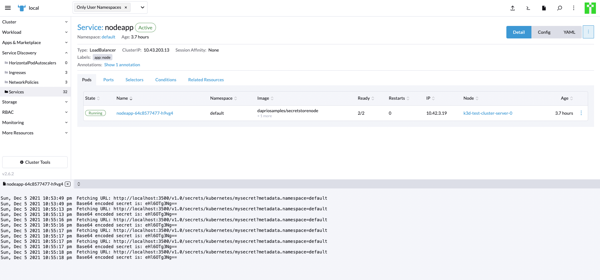
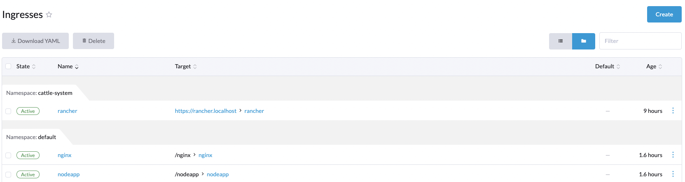

【k8s】本地k8s集群部署dapr应用
Dapr 在 2021 年发布了 v1.0 生产可用版本，预示着这个号称分布式运行时的框架终于可以进入各种大企业。说是尝鲜那已经是晚了很多，讲内部实现目前还不了解，本文主要是记录自己在本地创建 k8s 集群并且跑起来我第一个基于dapr应用的辛酸过程，辛酸是因为对k8s及dapr都不熟悉，加之国内网络限制，M1 芯片对某些软件不支持导致。

预装软件
在开始操作之前，我们需要安装很多软件，当然我相信大多数开发者已经装了大部分软件。
docker
首先自然是 docker，虽然不是容器技术的创造者，但容器技术的发扬光大，肯定有 docker 的功劳。docker 安装比较简单，在 MaxOS 上，直接下载 Desktop 版本即可。
k3d
k3d 是讲 k3s 运行在 docker 中的社区软件，k3s 是轻量级的 k8s，主要部署于物联网设备，ARM 芯片设备上，耗电少体积小，易部署，我们在本地开发中想创建 k8s 集群，可以选择 k3d+k3s 的方式，当然也有 minikube，microk8s，kind 等，我首选了 minikube + multipass 的方式，奈何国内网络限制，加之 multipass 某些想要的功能 M1 还不支持，就放弃了。在 Mac 上安装 k3d 很简单：
brew install k3d kubectl kubecm
helm
k8s 用于容器编排，但是如果手动通过 k8s API 管理集群，那是非常累的，所以有了 helm，k8s 的包管理器，通过简单的命令就可以部署应用，MaxOS 上安装比较简单：
brew install helm
dapr
今天的主角是 dapr，所以安装 dapr 也是必不可少的：
brew install dapr/tap/dapr-cli
可能会遇到下载失败，编译失败，所以配置下 GOPROXY，有条件的话可以将 https_proxy 设置成可以科学上网的代理，加速下载。
创建k8s集群
本接创建 k8s 集群的方式参考自 如何在本地快速启动一个 K8S 集群，执行一条命令：
1 | export CLUSTER_NAME="local-cluster" |
$ k3d cluster list
NAME SERVERS AGENTS LOADBALANCER
test-cluster 1/1 3/3 true
创建完成之后，会看到新建的集群已经就绪。
安装rancher
根据官网描述，Rancher 是一个开源的企业级容器管理平台。通过Rancher，企业再也不必自己使用一系列的开源软件去从头搭建容器服务平台。Rancher提供了在生产环境中使用的管理Docker和Kubernetes的全栈化容器部署与管理平台。Rancher由以下四个部分组成：
- 基础设施编排
- 容器编排与调度
- 应用商店
- 企业级权限管理
安装 rancher 的过程很痛苦，失败了很多次，但是我还是要把它装好，最后总结起来就是以下的命令，最关键的就是等：
1 |
|
成功安装 Rancher 之后，登录到 rancher 后台，我们可以在后台安装我们想要的组件，例如：prometheus，grafana等。

MySQL（just for fun）
参考 https://kubernetes.io/zh/docs/tasks/run-application/run-single-instance-stateful-application/，在我的机器上唯一不同的是，我是arm机器，mysql:5.6 镜像无法下载，替换成了 arm64v8/mariadb:latest。
K8S 仪表盘
本节内容参考：https://docs.rancher.cn/docs/k3s/installation/kube-dashboard/_index
-
部署仪表盘
1
2
3GITHUB_URL=https://github.com/kubernetes/dashboard/releases
VERSION_KUBE_DASHBOARD=$(curl -w '%{url_effective}' -I -L -s -S ${GITHUB_URL}/latest -o /dev/null | sed -e 's|.*/||')
sudo k3s kubectl create -f https://raw.githubusercontent.com/kubernetes/dashboard/${VERSION_KUBE_DASHBOARD}/aio/deploy/recommended.yaml -
仪表盘RBAC配置
dashboard.admin-user.yml 1
2
3
4
5apiVersion: v1
kind: ServiceAccount
metadata:
name: admin-user
namespace: kubernetes-dashboarddashboard.admin-user-role.yml 1
2
3
4
5
6
7
8
9
10
11
12apiVersion: rbac.authorization.k8s.io/v1
kind: ClusterRoleBinding
metadata:
name: admin-user
roleRef:
apiGroup: rbac.authorization.k8s.io
kind: ClusterRole
name: cluster-admin
subjects:
- kind: ServiceAccount
name: admin-user
namespace: kubernetes-dashboard部署
admin-user配置：kubectl create -f dashboard.admin-user.yml -f dashboard.admin-user-role.yml
-
获得 Token
kubectl -n kubernetes-dashboard describe secret admin-user-token | grep ‘^token’
-
要访问仪表盘，你必须创建一个安全通道到你的 K3s 集群
kubectl proxy --port=7788 --address=‘0.0.0.0’ --disable-filter=true --accept-hosts ‘.*’
使用类似下面的URL访问仪表盘， http://192.168.64.9:7788/api/v1/namespaces/kubernetes-dashboard/services/https:kubernetes-dashboard:/proxy/#/login ，正常情况下，部署在自己的电脑上，直接使用localhost即可，但我是将集群部署到虚拟机里面，所以在访问的时候被检测到不安全访问：

为了解决这个问题，使用 ssh 进行建立了一个转发隧道，参考：https://blog.fundebug.com/2017/04/24/ssh-port-forwarding/
ssh -L localhost:8877:localhost:7788 -NT ubuntu@192.168.64.9
然后就访问OK了：

验证集群
作为测试我们创建一个nginx应用来验证我们的集群：
- 创建包含一个 nginx 的 Deployment
1 | kubectl create deployment nginx --image=nginx |
- 创建Service，通过 ClusterIP 的方式暴露服务：
1 | kubectl create service clusterip nginx --tcp=80:80 |
- 创建 Ingress，Ingress 会代理我们的入口流量给我们的service，k3s 默认安装的 ingress 是 traefik 2.x，这里因为我不想把根目录直接暴露出去，每个服务都有一个前缀，例如到达
nginx service的都得以/nginx开始，所以应该要有个路由重写的过程，最终采用中间件进行路由重写：
1 | cat <<EOF | kubectl apply -f - |
安装 rancher 的好处就是能看得到，像我们刚才创建的 nginx Deployment，nginx Service，nginx Ingress以及 nginx-ingress-strip-prefix 中间件都可以在 Rancher 中观察到：




部署dapr应用
k8s集群中安装dapr，参考添加和安装-dapr-helm-图表，我使用下面的命令安装：
1 | helm upgrade --install dapr dapr/dapr --version=1.5.1-rc.3 --namespace dapr-system --create-namespace --set global.mtls.enabled=false --wait |
这里我们部署他的 secretstore 示例应用：
1 | # clone 示例应用 |
1 | # ./deploy/node.yaml |
查看我们创建的service：
1 | kubectl get svc nodeapp |
NAME TYPE CLUSTER-IP EXTERNAL-IP PORT(S) AGE
nodeapp LoadBalancer 10.43.203.13 172.18.0.3,172.18.0.4,172.18.0.5 48080:31093/TCP 3h34m
为了能够访问到我们的服务，还必须创建一个 Ingress，像之前的 nginx service 那样，执行下面的命令：
1 | cat <<EOF | kubectl apply -f - |
验证我们的密码获取请求：
1 | curl -k https://127.0.0.1:8443/nodeapp/getsecret |
eHl6OTg3Ng==
去我们的 nodeJs 应用查看日志，确认我们的请求被正确处理：

可以再确认下我们的 Ingress：

部署 dapr 组件
这里我们参考官方文档 部署状态组件，第一步，安装 redis:
1 | helm repo add bitnami https://charts.bitnami.com/bitnami |
redis 启动完成之后，首先部署状态组件：
1 | $ cat <<EOF | kubectl apply -f - |
然后部署发布订阅消息代理组件：
1 | $ cat <<EOF | kubectl apply -f - |